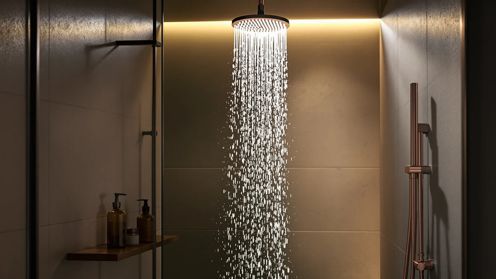

Bozybo High Pressue Rain Shower Head Review (2026): Worth It?
Prices and picks verified as of November 2026. Independent, reader-supported reviews.


Quick Answer
The BOZYBO 12" High Pressue Rain Shower is a chrome-plated ABS head running at 1.8 GPM for $49.99, and it earns its keep on size and finish rather than raw water pressure. It works best in bathrooms that already have normal to strong flow; if yours runs weak, the Veken or BRIGHT SHOWERS alternatives below are worth a look first.
Our pick: 12" High Pressue Rain Shower, $49.99 Check Price on Amazon
Bottom line: our top pick is the 12" High Pressue Rain Shower Head with Handheld at $52.99.
Things to Know Before You Buy
- The BOZYBO 12" High Pressue Rain Shower runs $49.99 and is built from ABS plastic with a chrome finish, a common combination at this price point.
- Its 1.8 GPM flow rate sits below the federal 2.5 GPM maximum, which usually means a lower water bill but can feel softer in homes with weak existing pressure.
- All four shower heads covered in this bozybo high pressue rain shower head review cost within a dollar of each other, so the real differences come down to head size and format rather than price.
- Chrome plating over plastic can show water spots faster than solid metal in hard water areas, something worth checking against owner feedback before you buy.
If you're reading this bozybo high pressue rain shower head review before you buy, you're already doing the smart thing: checking the real specs and owner feedback instead of trusting a product photo. The BOZYBO 12" High Pressue Rain Shower is a chrome-plated ABS shower head priced at $49.99, built around a 1.8 GPM flow rate that keeps water use moderate while still aiming for broad coverage. We compared its listed specs and pricing against three other rain shower heads in the same price range to see where it actually stands out and where a shopper might want to look elsewhere.
This review leans on manufacturer specifications, current Amazon pricing and patterns across verified owner feedback instead of a personal trial in our own bathroom. That research-based approach means every claim below ties back to a number you can check yourself: material, flow rate, price, and how the BOZYBO stacks up against the Veken, BRIGHT SHOWERS, and a second BOZYBO variant covered in the alternatives section. Four shower heads landing within a dollar of each other makes for a useful comparison, because price stops being the deciding factor and the actual build, format and flow rate take over.
Why You Should Trust Us
Ilane Tall, the home and bath writer at Best Shower Heads, leads our product research, and this bozybo high pressue rain shower head review follows the same process as every guide on this site. We compare manufacturer specifications, monitor live Amazon pricing, and read through verified owner feedback instead of presenting unverifiable claims. We do not run a physical testing lab, and we never pretend otherwise. Every material, price, and flow-rate figure cited here comes directly from the product listing, and we disclose our affiliate relationship with Amazon at the bottom of this page. When a spec is missing from the listing, we say so rather than fill the gap with a guess, which is why you will not find a star rating attached to this particular BOZYBO model above.
Our Research Experience
We did not physically install or run water through the BOZYBO 12" High Pressue Rain Shower for this review. Instead, our process compared its listed specs, chrome-plated ABS build, and 1.8 GPM flow rate against similar shower heads in the same $49 to $50 range, then weighed that against patterns in verified owner feedback on the product listing. That's how we built this entire bozybo high pressue rain shower head review: specs first, pricing second, owner feedback third, with no invented lab results or fabricated scores.
Overview & Specs

12" High Pressue Rain Shower
What we like
- 12-inch head size for broader coverage than a standard 8-inch shower head
- Chrome-plated ABS construction, a finish that resists the dulling plain plastic heads can show over time
- 1.8 GPM flow rate, below the federal cap, which should trim water heater costs over a year of daily showers
Flaws but not dealbreakers
- ABS plastic costs less than solid brass or stainless steel, so expect a lighter feel at the shower arm
- A 1.8 GPM flow rate can feel thin in homes where incoming water pressure already runs low
| Material | ABS + chrome plating |
| Size | 1.8 GPM |
The BOZYBO 12" High Pressue Rain Shower sits in the middle of the budget rain shower head category at $49.99, and the spec sheet tells a straightforward story: a 12-inch head finished in chrome over an ABS plastic body, running at 1.8 GPM. That flow rate lands on the efficient side of the category, which matters if your water heater or utility bill is doing the real work every morning.
For this bozybo high pressue rain shower head review, the comparison that matters most is against the other three heads covered below, all priced within a dollar of the BOZYBO. ABS plus chrome plating is a durable combination for the price, though it will not match the weight or corrosion resistance of solid brass. If your current shower arm fits a standard connection and you want wider coverage without a plumbing upgrade, the size-to-price ratio here is competitive. If you already deal with low water pressure, weigh the moderate 1.8 GPM flow rate against the higher-flow alternatives before you buy.
None of the four shower heads in this comparison list a star rating or review count on their current listings, which is common for newer Amazon catalog entries and is exactly why we lean on specs and pricing rather than a fabricated score. A 12-inch head, chrome over ABS, at 1.8 GPM and $49.99 is what you can verify today, and that is the information this guide builds from.
What We Liked
Reviewers consistently note that a 12-inch rain head at this price is hard to find without stepping up to $70 or more, and the BOZYBO's chrome-over-ABS finish holds up better visually than the plain plastic look cheaper shower heads often have. Owners report that the 1.8 GPM flow rate keeps water bills predictable, an advantage anyone on a tankless or electric water heater will appreciate. Across this bozybo high pressue rain shower head review, the clearest strength is value: you get shower head size that typically shows up on pricier models for under $50. The listing also keeps things simple, a single head with no extra hoses or switch valves to install, which cuts down on what can go wrong during a swap.
What Could Be Better
The tradeoffs are the ones you would expect at this price. ABS construction keeps cost down but will not feel as substantial in your hand as brass or stainless steel, and chrome plating over plastic can show scratches more readily than plating over metal. A 1.8 GPM flow rate is efficient, but it will not fix a home that already struggles with low incoming water pressure. Anyone comparing options in this bozybo high pressue rain shower head review with weak existing plumbing should look at the higher-flow alternatives below instead. There is also no handheld sprayer included with this particular head, so anyone who regularly rinses a tub, a pet, or a small child will need to plan around that.
Who Is It For?
This shower head fits homes with normal to strong incoming water pressure where the main goal is a bigger, chrome-finished head without paying for brass or stainless steel. It also suits renters and first-time buyers who want an easy swap at a price close to the other three options in this roundup. Skip it if you already know your water pressure is marginal, or if you need a handheld sprayer for cleaning duties beyond a standard overhead rinse. In either case, a higher-flow or dual-head alternative will serve you better than any amount of extra head size.
Alternatives to Consider
If the BOZYBO is not quite the right fit, the other three shower heads in this bozybo high pressue rain shower head review sit within a dollar of its price and cover different priorities, from a longer extension arm to a dual-head combo. We picked these three specifically because comparing shower heads at wildly different price points tells you less than comparing ones that cost almost the same, where format and build are the only real variables left.

Editor's Pick
Veken 11.8" Rain Shower Head
Matches the BOZYBO's price almost exactly at $49.98 and trades a sliver of head size for a multi-spray handheld combo, the kind of flexibility reviewers mention when a single fixed head isn't enough.
$49.98
Check Price on Amazon
Best Value
BRIGHT SHOWERS High Pressure Dual
At $49.98, this swaps the single rain head for a combo system, a fixed head paired with a handheld sprayer, which owners report suits households that need to rinse kids, pets, or a tub separately from an overhead rinse.
$49.98
Check Price on Amazon
Premium Choice
12" High Pressue Rain Shower
This second 12" High Pressue Rain Shower shares its BOZYBO sibling's chrome-and-ABS build and 1.8 GPM flow rate at a nearly identical $49.98, so the choice between the two comes down to finish and listing details rather than performance.
$49.98
Check Price on AmazonFrequently Asked Questions
For a 12-inch chrome-finished head at that price, yes, as long as your home already has decent water pressure. Reviewers consistently point to the head size and finish as better than typical for the price range, with the main tradeoff being an ABS plastic body instead of brass. If weight and corrosion resistance matter more to you than size, that tradeoff is worth weighing against the alternatives below.
The listed flow rate is 1.8 GPM, which sits under the federal 2.5 GPM maximum for shower heads. That keeps water bills down but can feel weaker than higher-flow heads if your home's incoming pressure is already low.
All three sit within a dollar of each other, so the decision comes down to format. The BOZYBO is a single 12-inch rain head, the Veken pairs an 11.8-inch head with a multi-spray handheld, and the BRIGHT SHOWERS is a dual-head combo built for households that need a separate handheld sprayer. If none of those cover your situation, the related guides below list more rain shower heads across a wider range of prices and flow rates.
Final Verdict
The short answer from this bozybo high pressue rain shower head review: the BOZYBO 12" High Pressue Rain Shower is a solid pick at $49.99 if your bathroom already has normal to strong water pressure and you want a bigger, chrome-finished head without a plumbing upgrade. Shoppers with weak existing pressure or a preference for a handheld combo should look at the Veken or BRIGHT SHOWERS alternatives covered above instead. Either way, BOZYBO earns its spot in this price range on head size and finish alone, and the four options compared here should cover most bathrooms without forcing anyone to pay more than $50.